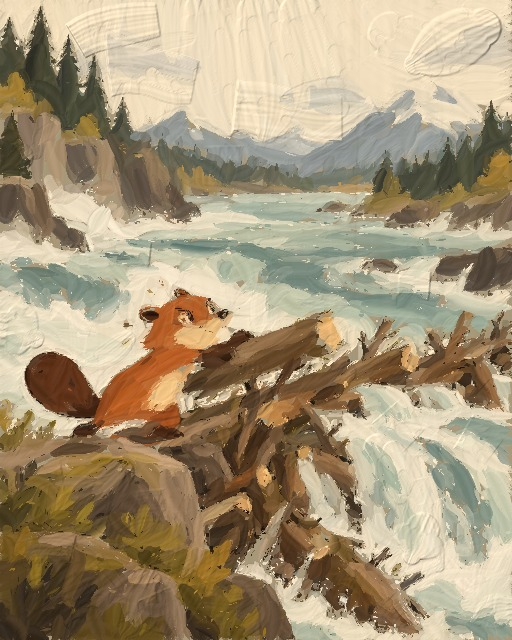
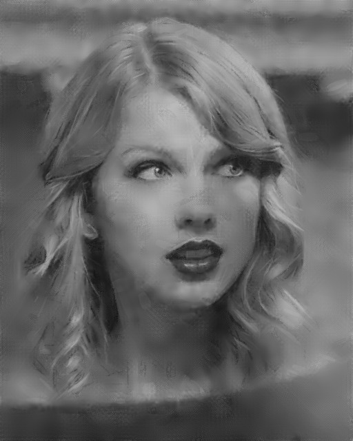
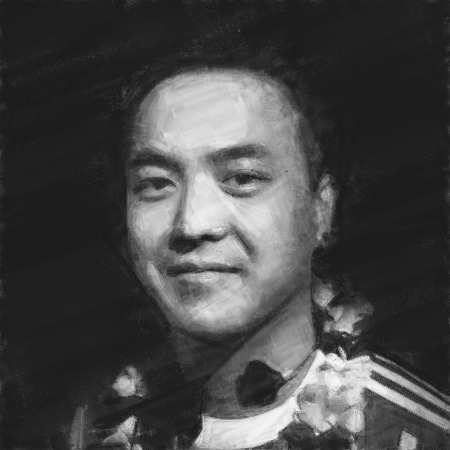

Stroke Master builds a reference image through a deterministic stream of accepted marks. Every deposit, lift and blend belongs to the painting's history. Replay follows that history; it never reruns the search.
Closing release / V66
Oil V33 · Charcoal V58 · V50 alternative
The current development chapter is closed. Planner research is paused.
The question that stayed open
Can a machine develop a drawing through purposeful, human-readable decisions, rather than merely arrive at a recognisable image? Good final likeness and a plausible sequence of construction are different achievements.
The project made real progress in procedural materials, selective corrections, native replay and a usable studio. It did not solve purposeful intermediate drawing. Numerical error, accepted-operation counts and passing software tests never settled that artistic question.
01 / The path
Sixty-five versions. Several changes of direction.
V1—V7
First, make every mark real.
The prototype separated reference pixels from the painted surface. Seeded search proposed procedural strokes on a blank ground; only accepted records changed the painting. The oil library grew to thirteen profiles and eleven gestures. Relief, directional light, shadows, native exports and source-free replay made those records inspectable.
The background-first lock gave way to an explicit foundation and unrestricted correction. Targeted refinement added feathered local work and Undo. Fine attention improved readable detail, while rough boundaries and raised correction ghosts remained.
Recovery studies separated pigment errors from relief artifacts. Revisiting residual error repaired neglected spill; coherent overlap stopped thin paint from flattening arbitrary amounts of impasto. Geometry-led planning improved some boundaries at the expense of broad construction. Final-contact validation helped a crown halo; V17 then reproduced V16's paintings with cheaper validation.
These were partial gains. Toe artifacts, rectangular ghosts and underpaint fragments survived. A compact-dab experiment was rejected instead of being promoted because it was newer.
Better tools do not automatically make better decisions.
Two-colour loading could represent smooth transitions; selective fitting and contour-aware direction helped some portrait planes. Broader construction proved harder. Shape revisiting, relaxed widths, strict width stages and a purist block-in did not earn general adoption.
The Form Studies branch explored regions, local contact geometry and footprint-fitted colour. Medium contacts showed potential, but weak broad repair remained. V29 paused that approach rather than hiding its negative result.
Crossover brought ordinary V12 construction into the selective painter. Independent construction attention and graded loading followed. V33 reused immutable brush tables and removed redundant patch work while preserving V32's painting decisions. It became the preferred oil baseline after generalisation checks and human review.
The corrected V35 human vote record favours V33 in 15 of 16 rounds, with one V17 preference. That is the recorded judgement, not proof of universal superiority. Later stroke-end studies did not establish a clear improvement: human review called V36 a visual tie, with a slight preference for V33's rooster head. V37 stopped at its six-contact mechanism gate, before full paintings. Neither treatment was promoted. V33 remains the recommendation in V66.
The workflow became explicit about live sessions, paused passes and imported replay. A floating reference, compact settings and state-dependent actions made the canvas central. V40 added an oil substrate and a first charcoal experiment.
V41's fitted deposit and lift, V42's connected contacts and blending, and V43–V44's placement and natural broad contacts made charcoal more controllable. Recognisability and technical correctness were not sufficient artistic success: the earliest charcoal painter remained weak, and later faces and skies still showed seams.
Separate material capability from drawing quality.
The expressive construction branch exposed hard patches and expensive search. V49 changed progression: five cached Gaussian targets led from broad values to the original reference, advancing through evidence-based quality gates. V50 decoupled swept travel from contact width. Its finished modelling remains a useful alternative, although its opening rectangular foundation is conspicuous.
V52 was a dedicated charcoal material study, not a new planner: finite stick face, pressure, loading, release and native paper tooth. V53 integrated that material into ordinary drawing. Subsequent gate, scoring, placement and blending studies produced mixed or negative results. V58 coordinated structure and tone on that material, improving useful marks without resolving fragmented shading. Human review later established it as a benchmark; V66 now recommends it for fresh charcoal sessions.
No-blend construction, direct-reference ablations, longer gestures and controlled loading tested specific restrictions. They demonstrated capabilities and occasional improvements, without replacing V58 as a generally stronger drawing. Broader exposure in V63 also revealed patchwork and a landscape character loss.
V64 made the architectural break: connected curves, masses and tasks replaced blur-stage scheduling. The actual drawings suffered quiet strips, gaps and weak modelling. V65 replaced quantised regions with overlapping continuous tonal passages. Coverage improved on Mat and Wonder Lake, but diagonal facets, weak volume and missing selective finish remained. Forest and Rainier exposed severe late rejection costs. Both versions remain unfinished research.
The ambition remains open: a drawing whose intermediate decisions feel purposeful. V66 closes this chapter by preserving evidence and usable tools, without claiming a new planner breakthrough.
These are actual preserved accepted-stream paintings, rendered by the shared engine. No generative image model or illustrative replacement was used.

Oil / V33Beaver · seed 42 · 8,400 operations. Preserved V35 trial, including its remaining angular detail.

Charcoal / V58Tay · seed 42 · 5,600 operations. The existing benchmark that informed later human review.

Charcoal / V50 alternativeMat · seed 42 · 2,800 operations. Strong finished modelling; the early rectangular foundation remains a trade-off.
Reference-image reuse permissions and photographer/illustrator credits are not documented in the surviving checkout. These study outputs are included for review; their inclusion does not establish permission for public redistribution. Clear the underlying reference rights before publishing these showcase assets. Asset provenance and licences.
03 / The record
Every version has a place.
Versions name development iterations, including studies, investigations and rejected treatments. A higher number does not mean a better planner. Original logs retain the recommendation and terminology of their own time; V66's current recommendations supersede those historical defaults.
V34Generalisation and human preference consolidate V33; there is no V34 painter. README-v34 · V34-EXPERIMENT
V35The Painter's Trials compare authentic V12, V17 and V33. Later corrected human votes favour V33. README-v35 · V35-COMPETITION
V36Pointed stroke shoulders were not promoted; later human review calls V36 a visual tie, with a slight V33 rooster-head preference. README-v36 · V36-EXPERIMENT
V37Gradual end deposition exposes underpaint and weakens coverage; rejected before full paintings. README-v37 · V37-EXPERIMENT
V38Studio workflow refinement: explicit session state, floating reference and local control. README-v38
V39A simpler state-dependent studio with a Settings drawer, themes and editable defaults. README-v39
V40Oil canvas substrate and the first experimental dry-charcoal painter. README-v40
V41Fitted charcoal deposit/lift improves control; passing tests alone did not make V40 a good painter. README-v41 · V41-CHARCOAL-PRACTICE
V42Connected charcoal gestures and conservative redistribution introduce blending. README-v42
V43Bounded placement probes leave facial and sky seams; broad shading ablation is rejected. README-v43
V44Natural broad contacts improve some tone; later becomes the long-standing charcoal default. README-v44
V45An expressive charcoal foundation study, with incomplete general drawing capability. README-v45 · V45-AUDIT
V46A complete expressive planner still lacks a convincing finished-quality advantage. README-v46
V50Independent swept width and evidence-bounded travel improve coverage and speed. Strong finished modelling, rectangular foundation. README-v50
V51Directional contact and partial stick contact change early construction, but lose final tonal accuracy. README-v51
V52A standalone material capability study: finite stick face, loading, pressure and paper tooth. No planner promotion. README-v52
V53V52's charcoal contact enters the five-stage painter as material12 / stick10. README-v53
V54Earlier quality-gate progression and bounded final texture tolerance address excessive smoothing. README-v54
V55Scale-aware scoring corrects an incentive but harms finished modelling and compute economy; rejected. README-v55
V56Placement refinement improves some contacts and fidelity, with higher complete fitting cost. README-v56
V57Continuous redistribution removes a synthetic lattice but does not improve whole-drawing character; rejected. README-v57
V58Coordinated structure and tonal shading improve useful marks on the V52-derived material. Today's charcoal recommendation. README-v58
V59No-blend construction improves its control, but does not match V58's finish. README-v59
V60Staged construction beats the direct-reference ablation; faceted planes and cost remain. README-v60
V61Long gestures are a demonstrated capability, without an overall quality or economy win. README-v61
V62Controlled loading works as a material capability but is too sparsely selected to establish drawing benefit. README-v62
V63Broader controlled-loading exposure improves some modelling, while revealing patchwork and character losses. README-v63
V64A separate contour/mass/task architecture abandons blur stages. Its strip-like construction and final modelling fail the quality goal. README-v64
V65Overlapping continuous tonal passages improve V64 coverage, but weak modelling, facets and severe late rejection costs remain unresolved. README-v65
Open index.html directly, or serve the generated folder over ordinary HTTP. The package command creates stroke-master/dist/stroke-master/. Copy that folder into an Angular project's public/ directory. Exact deployment and verification steps.
Know what to edit
engine.js owns canonical material, rasterisation, sessions and replay. experimental/ retains planner dependencies. worker.js runs painting and timeline jobs. app.js, studio styles and templates own the interface; studio-defaults.js owns fresh-session defaults. GIF sampling, export UI and worker live in gif-plan.js, gif-ui.js and gif-worker.js.
Edit maintained sources and rebuild; generated HTML embeds them. The production package is a runtime distribution, not a complete development checkout. Historical galleries, bulk streams and recovery ZIPs remain in their original evidence locations and are excluded from production.
Reproduce a painting honestly
Keep decoded planning pixels, seed, planner, settings and implementation fixed. Continue and targeted Undo require the live optimiser session. Artwork JSON preserves accepted operations, material and identity for source-free replay; it does not restore the optimiser or its reference. Browser image decoding and colour management can differ.
For prior studies, start at the version's original report and restoration instructions. Some archives are external or ignored local evidence; the small public log index does not claim to carry every historical gallery.
Local work, practical limits
The studio processes user images and exports in browser workers, without uploading them. Its embedded engine, fonts and GIF codec need no runtime CDN. Studio painting and exports work from disk in tested desktop Chrome; the About page and showcase need their adjacent local files. Hosted first loads need a network connection; there is no service worker or installable offline cache.
GIF is limited to 256 colours. One shared palette limits flicker, and native rendering retains material at each chosen size. Work estimates are guards, not measured peak memory or promised file sizes. Touch devices, Safari and Firefox are not newly verified for V66.
V66 / Closing note
Keep the tools. Keep the evidence. Leave the question open.
Oil V33 and charcoal V58 are the recommended starting points. V50 remains an accessible alternative. Research is paused, historical identities are preserved, and no V66 planner is introduced.